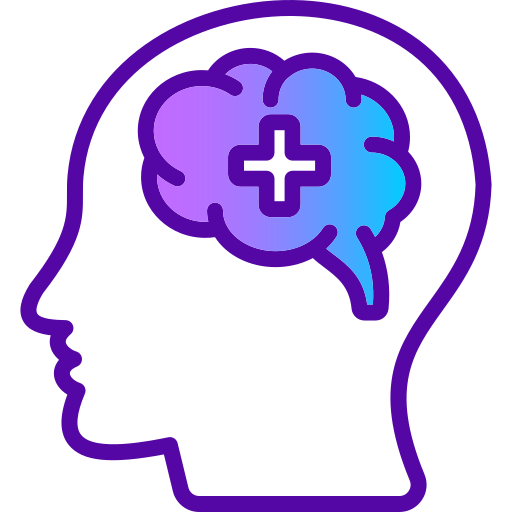

The User Cognitive Tests website that will examine the users’ memory and cognitive abilities through different exams and cognitive tools. These exams provided will be interactive and dynamic, continuously getting more difficult as you improve and test yourself longer. Users will be able to see their scores for each test and see if they improved from their last attempt at testing themselves. This website’s purpose is to be a platform where the users can challenge themselves mentally, improve their cognitive skills, and see their results throughout the different interactive tools.
